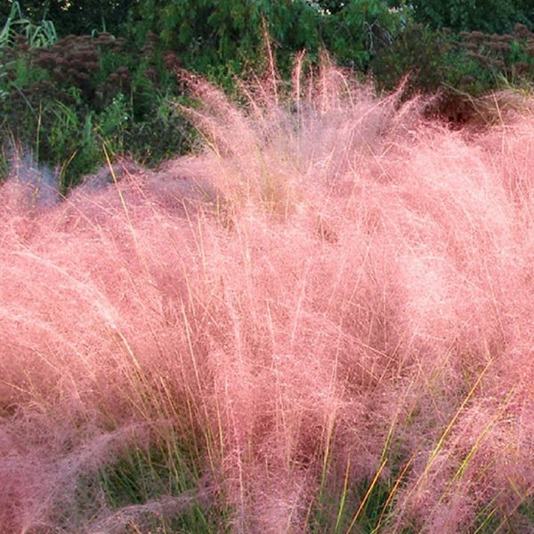

핑크 뮬리 그라스
[Pink Muhly Grass]
요약- 외떡잎식물 벼목 벼과에 속하는 식물로, 조경용으로 식재되는 여러해살이풀이다.

|
| 학명 |
Muhlenbergia capillaris |
| 계 |
식물 |
| 문 |
속씨식물 |
| 강 |
외떡잎식물 |
| 목 |
벼목 |
| 과 |
벼과 |
| 원산지 |
미국 |
| 분포지역 |
미국 서부~중부 |
| 서식장소/자생지 |
따뜻한 지방의 평야 및 길가 |
| 크기 |
높이 30~90cm, 너비 30~90cm |
| 꽃의 색 |
분홍색 혹은 자주색 |
| 개화시기 |
9~11월 |
| 잎의 형태 |
줄 모양 |
|
흔히 핑크 뮬리라고도 불리며, 본래는 미국의 서부나 중부의 따뜻한 지역의 평야에서 자생하는 여러해살이풀이지만, 전세계적으로 흔히 조경용으로 식재된다.
- 형태
- 높이는 30~90cm, 너비는 60~90cm로 모여나기하며, 뿌리가 옆으로 뻗지 않는다. 줄기는 곧게 서고 마디에 털이 있다.
- 잎
- 잎은 줄기에서 나며, 줄 모양이다. 잎몸의 길이는 15~75cm이고, 밑부분 너비는 2~10mm로 얇고 길다. 잎몸은 털이 없고, 대체로 편평하나 간혹 가장자리가 말려 더 좁아 보이며, 너비가 끝으로 갈수록 얇아져 실처럼 된다. 잎집에는 털이 없으며, 잎혀는 막으로 되어 있고 가는 털이 없다.
- 꽃
- 꽃은 작은 이삭으로 납작하며, 주로 하나의 꽃이 하나의 수상꽃차례(이삭꽃차례)를 이룬다. 이 수상꽃차례가 모여 뭉친 원추꽃차례 또는 펼쳐진 원추꽃차례를 이루며, 전반적인 꽃차례가 분홍색에서 자주색을 띤다. 꽃은 한 꽃에 암술과 수술이 모두 들어 있는 양성화로 2~3개의 수술이 있고, 암술대는 2개의 암술머리로 갈라진다. 수상꽃차례의 꽃자루는 얇고 긴 털 모양이나 표면이 거칠고 윗부분이 부풀어 있다. 포영은 2개이며, 호영보다 길이가 약간 짧다. 포영에는 1개의 맥이 있고 길이 1~5mm의 까락이 달린다. 호영은 얇은 막으로 3개의 맥이 있고 밑부분에 털이 달리며, 끝에 1~2cm의 까락이 달린다. 내영은 호영과 비슷한 크기로 2개의 맥이 있다.
- 열매
- 높이는 30~90cm, 너비는 60~90cm로 모여나기하며, 뿌리가 옆으로 뻗지 않는다. 줄기는 곧게 서고 마디에 털이 있다.
- 서식지
- 흔히 모래나 자갈이 많고 배수가 잘 되며 약간 건조한 트인 지대에서 잘 자란다. 또한 해가 잘 드는 따뜻한 곳에서 잘 자란다.
- 특징 및 활용
- 습한 기후, 더위, 가뭄 등을 잘 견딜 수 있고, 겨울을 날 수 있다. 여름에는 푸른 빛의 잎, 가을에는 분홍빛에서 자줏빛의 꽃차례가 아름답기 때문에, 조경용으로 식재된다.
